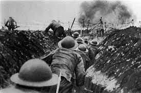
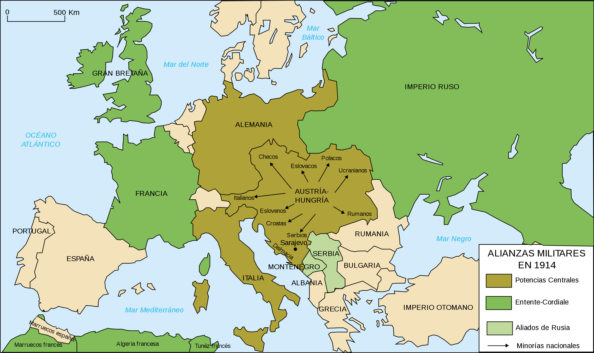

Bienvenido al Curso de Sociales sobre la Primera Guerra Mundial
En este curso aprenderás sobre los antecedentes, desarrollo y consecuencias de la Primera Guerra Mundial. Explora los temas y videos proporcionados para ampliar tus conocimientos.
Introducción
- ¿Que fue la Primera Guerra Mundial?
- La Primera Guerra Mundial, que tuvo lugar entre 1914 y 1918, fue un conflicto global que involucró a las principales potencias europeas y a otras naciones de todo el mundo. Se desencadenó debido a una serie de tensiones políticas, territoriales y económicas entre las naciones en ese momento.
Videos
- Peliculas para ayuda audiovisual para el tema: Sin novedad en el frente y 1917.
Imagenes
- 
- 